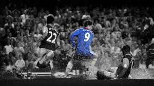

Football--Football is a family of team sports that involve, to varying degrees, kicking a ball to score a goal. Unqualified, the word football normally means the form of football that is the most popular where the word is used. Sports commonly called football include association football (known as soccer in North America, Ireland and Australia); gridiron football (specifically American football or Canadian football); Australian rules football; rugby union and rugby league; and Gaelic football.[1] These various forms of football share to varying extent common origins and are known as "football codes". There are a number of references to traditional, ancient, or prehistoric ball games played in many different parts of the world.[2][3][4] Contemporary codes of football can be traced back to the codification of these games at English public schools during the 19th century.[5][6] The expansion and cultural influence of the British Empire allowed these rules of football to spread to areas of British influence outside the directly controlled Empire.[7] By the end of the 19th century, distinct regional codes were already developing: Gaelic football, for example, deliberately incorporated the rules of local traditional football games in order to maintain their heritage.[8] In 1888, The Football League was founded in England, becoming the first of many professional football associations. During the 20th century, several of the various kinds of football grew to become some of the most popular team sports in the world.[9] The various codes of football share certain common elements and can be grouped into two main classes of football: carrying codes like American football, Canadian football, Australian football, rugby union and rugby league, where the ball is moved about the field while being held in the hands or thrown, and kicking codes such as Association football and Gaelic football, where the ball is moved primarily with the feet, and where handling is strictly limited.[10] Common rules among the sports include:[11] Two teams of usually between 11 and 18 players; some variations that have fewer players (five or more per team) are also popular. A clearly defined area in which to play the game. Scoring goals or points by moving the ball to an opposing team's end of the field and either into a goal area, or over a line. Goals or points resulting from players putting the ball between two goalposts. The goal or line being defended by the opposing team. Players using only their body to move the ball, ie no additional equipment such as bats or sticks. In all codes, common skills include passing, tackling, evasion of tackles, catching and kicking.[10] In most codes, there are rules restricting the movement of players offside, and players scoring a goal must put the ball either under or over a crossbar between the goalposts.

HISTORY-- The Chinese competitive game cuju (蹴鞠) resembles modern association football (soccer),[13] descriptions appear in a military manual dated to the second and third centuries BC.[14] It existed during the Han dynasty and possibly the Qin dynasty, in the second and third centuries BC.[15] The Japanese version of cuju is kemari (蹴鞠), and was developed during the Asuka period.[16] This is known to have been played within the Japanese imperial court in Kyoto from about 600 AD. In kemari several people stand in a circle and kick a ball to each other, trying not to let the ball drop to the ground (much like keepie uppie). Ancient Greece and Rome The Ancient Greeks and Romans are known to have played many ball games, some of which involved the use of the feet. The Roman game harpastum is believed to have been adapted from a Greek team game known as "ἐπίσκυρος" (Episkyros)[17][18] or "φαινίνδα" (phaininda),[19] which is mentioned by a Greek playwright, Antiphanes (388–311 BC) and later referred to by the Christian theologian Clement of Alexandria (c. 150 – c. 215 AD). These games appear to have resembled rugby football.[20][21][22][23][24] The Roman politician Cicero (106–43 BC) describes the case of a man who was killed whilst having a shave when a ball was kicked into a barber's shop. Roman ball games already knew the air-filled ball, the follis.[25][26] Episkyros is recognised as an early form of football by FIFA.[27] Native Americans There are a number of references to traditional, ancient, or prehistoric ball games, played by indigenous peoples in many different parts of the world. For example, in 1586, men from a ship commanded by an English explorer named John Davis, went ashore to play a form of football with Inuit in Greenland.[28] There are later accounts of an Inuit game played on ice, called Aqsaqtuk. Each match began with two teams facing each other in parallel lines, before attempting to kick the ball through each other team's line and then at a goal. In 1610, William Strachey, a colonist at Jamestown, Virginia recorded a game played by Native Americans, called Pahsaheman.[citation needed] Pasuckuakohowog, a game similar to modern-day association football played amongst Amerindians, was also reported as early as the 17th century. Games played in Mesoamerica with rubber balls by indigenous peoples are also well-documented as existing since before this time, but these had more similarities to basketball or volleyball, and no links have been found between such games and modern football sports. Northeastern American Indians, especially the Iroquois Confederation, played a game which made use of net racquets to throw and catch a small ball; however, although it is a ball-goal foot game, lacrosse (as its modern descendant is called) is likewise not usually classed as a form of "football."[citation needed]